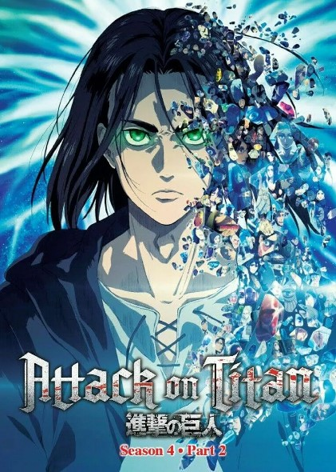

Attack on Titan (Japanese: 進撃の巨人, Hepburn: Shingeki no Kyojin,) is a Japanese manga series written and illustrated by Hajime Isayama. It is set in a world where humanity is forced to live in cities surrounded by three enormous walls that protect them from gigantic man-eating humanoids referred to as Titans; the story follows Eren Yeager, who vows to exterminate the Titans after they bring about the destruction of his hometown and the death of his mother.It was serialized in Kodansha's monthly magazine Bessatsu Shōnen Magazine from September 2009 to April 2021, with its chapters collected in 34 tankōbon volumes. An anime television series was produced by Wit Studio (seasons 1–3) and MAPPA (season 4). A 25-episode first season was broadcast from April to September 2013 , followed by a 12-episode second season broadcast from April to June 2017. A 22-episode third season was broadcast in two parts, with the first 12 episodes airing from July to October 2018 and the last 10 episodes airing from April to July 2019. A fourth and final season premiered in December 2020, airing 16 episodes in its first part. A second part consisting of 12 episodes aired from January to April 2022, and the third and fourth parts aired in two specials; the first premiered in March 2023 , and the second premiered in November 2023. Attack on Titan has become a critical and commercial success. By November 2023, the manga had over 140 million copies in circulation, making it one of the best-selling manga series of all time. It has won several awards, including the Kodansha Manga Award, the Attilio Micheluzzi Award, and the Harvey Award
| Season 1 | Season 2 | Season 3 part 1 | Season 3 part 2 | Season 4 part 1 | Season 4 part 2 | Season 4 part 3 | |
|---|---|---|---|---|---|---|---|
| Covers |  | ||||||
| Best Rating | Ep 21 (9.5) | Ep 12 (9.7) | Ep 07 (9.5) | Ep 06 (9.7) | Ep 05 (9.5) | Ep 05 (9.7) | Ep 01 (9.4) |
| Worstst Rating | Ep 15 (8.1) | Ep 08 (8.4) | Ep 04 (8.5) | Ep 07 (9.2) | Ep 10 (8.5) | Ep 08 (8.4) | Ep 02 (8.7) |